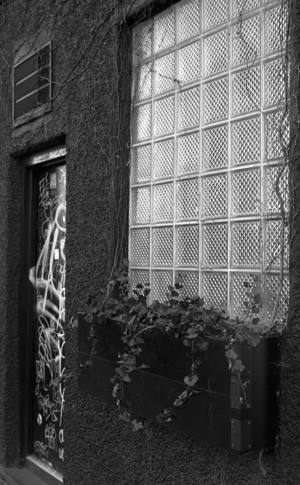
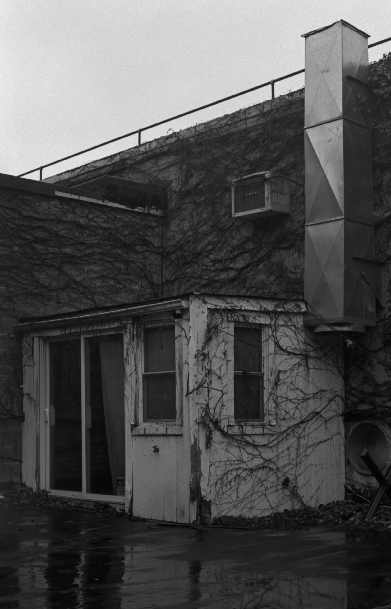
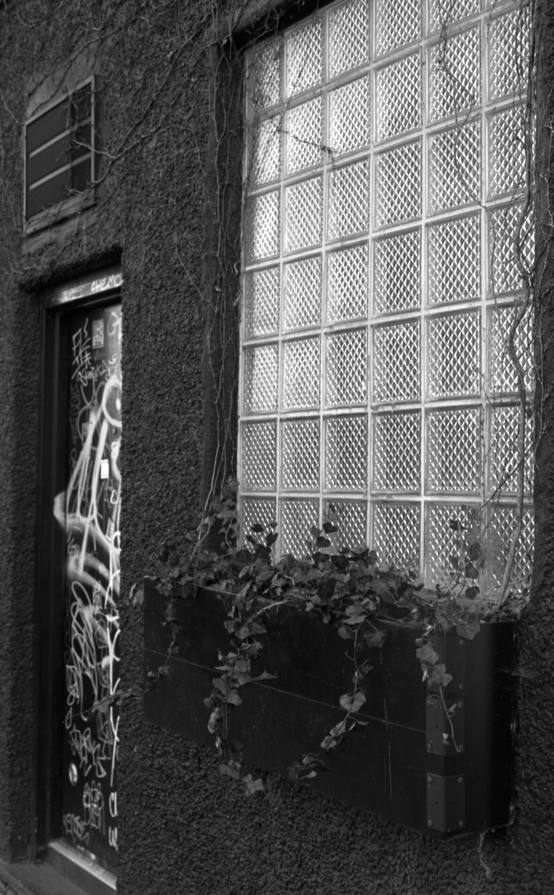
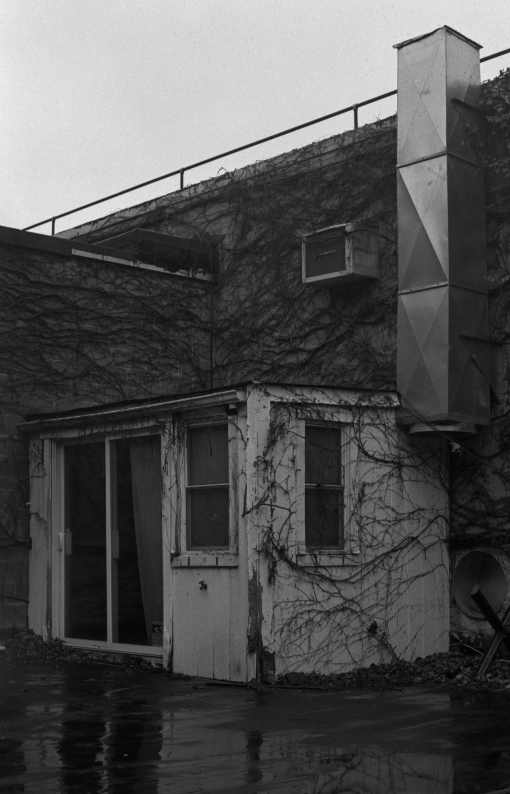
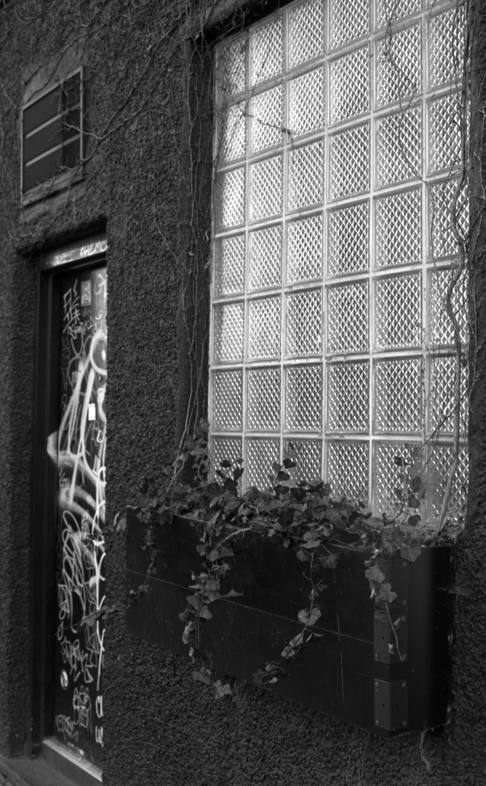
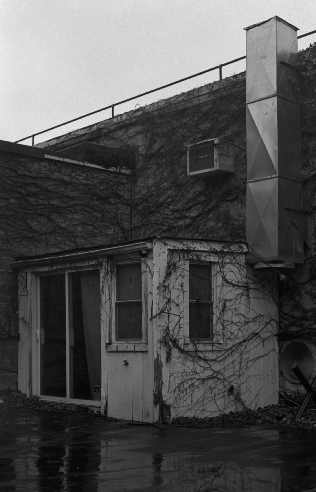

I'm a third year undergraduate student at Cal State Long Beach majoring in physics. Prior to transferring to CSU Long Beach in fall 2023, I attended Monterey Peninsula College. During my time in Monterey, I volunteered and interned at the Monterey Institute for Research in Astronomy (MIRA), where I worked on several projects that I continue to collaborate on and hope to soon publish.
After completing my bachelor's degree in physics, I plan to continue in higher education to earn a PhD in astronomy and/or astrophysics, with the goal of working in the field of astronomy, both as a researcher and educator. My family and I immigrated from Ukraine in 2009, and I am fluent in Russian as well as English. When I'm not pulling all-nighters for school, I enjoy photography (film or digital, but preferably film), finding new electronic artists to listen to, and binging 90s anime.
As an intern at MIRA, I contributed to several ongoing projects. My main project was using atmospheric fitting software (ATMOF) and radiative transfer software (VSTAR) to improve on the deteurium to hydrogen ratio of Neptune in order to gain more definitive insight into its formation site. The current results indicate that Neptune formed inside of its current orbit, but more work is needed to be able to discern between this and the formation site of Uranus.
Additionally, I was given the opportunity to contribute observational data for my advisor's polarimetry research using the two telescopes of MIRA, the 14-inch at the Weaver Student Observatory in Marina and the 36-inch at the Oliver Observing Station on Chews Ridge (pictured behind me in the photo above ☺), which introduced me to the basics of telescope operation. The data I obtained is to be used for research on high polarization standard stars as well the polarization of Venus. Because of my involvement with the observations of polarization standards, I was able to contribute as a co-author on the corresponding paper, from which I picked up some fundamentals of LaTeX as well as learned my way around databases such as SIMBAD and ADS.
The publications that I have co-authored so far (in progress):
1. Daniel V. Cotton, Kimberly Bott, Jeremy Bailey, Lucyna Kedziora-Chudczer, Ain De Horta, Graeme Melville, Normandy Filcek, Jonathan P. Marshall, Derek L. Buzasi, Ievgeniia Boiko, Nicholas Borsato, Jean Perkins, Daniela Opitz, Shannon Melrose, Gesa Gr√ºning, Dag Evensberget and Jinglin Zhao, "Polarization position angle standard stars: a reassessment of θ and its variability for seventeen stars based on a decade of observations," in preparation for Monthly Notices of the Royal Astronomical Society.
2. Jeremy Bailey, Daniel V. Cotton, Kimberly Bott and Ievgeniia Boiko, "One hundred years of Venus polarimetry," in preparation for Icarus.
3. Daniel V. Cotton, Kimberly Bott, Ievgeniia Boiko, Lucyna Kedziora-Chudczer, Jeremy Bailey, Behrooz Karamiqucham and Jonathan Horner, "Towards an improved determination of the methane D/H ratio for Neptune," in preparation for Icarus.

